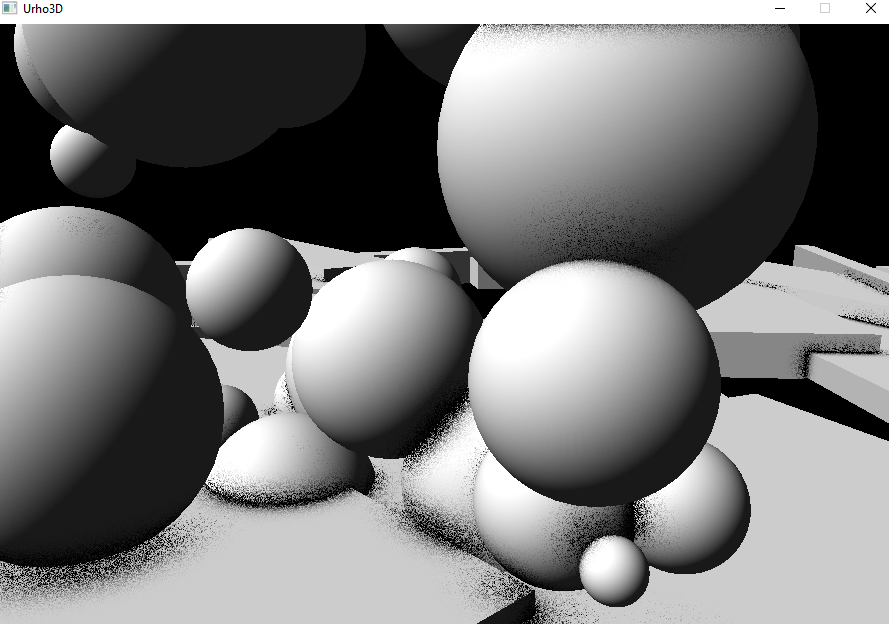
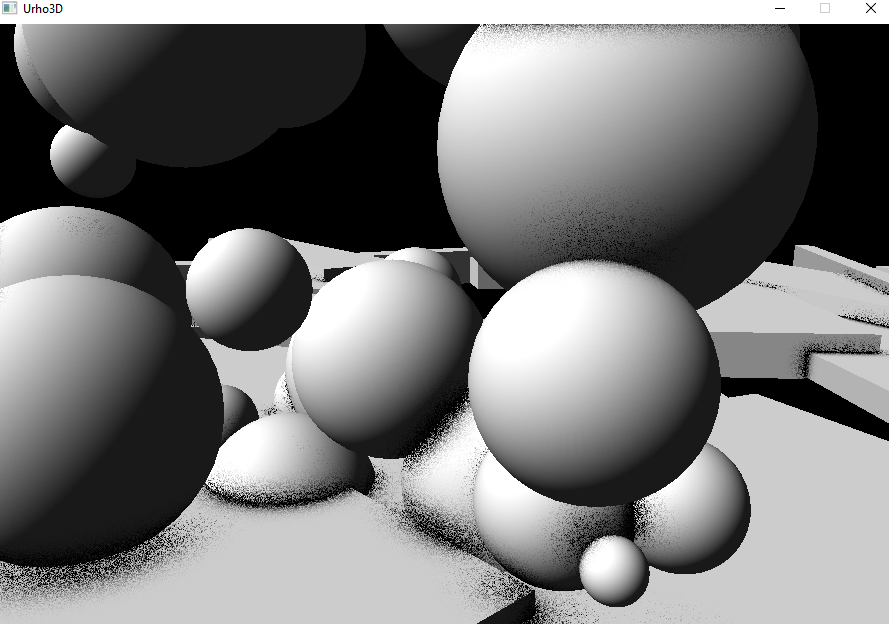

hvince95
I’ve been trying to include Alchemy ambient occlusion by reattiva ( https://discourse.urho3d.io/t/alchemy-ambient-occlusion/662 ) in my project but upon porting the Angelscript code to C++ I get these warnings/errors in the log file:
[Sat Mar 17 09:02:54 2018] WARNING: Deprecated rtsizedivisor mode used in rendertarget definition
[Sat Mar 17 09:02:54 2018] WARNING: Deprecated rtsizedivisor mode used in rendertarget definition
[Sat Mar 17 09:02:54 2018] WARNING: Deprecated rtsizedivisor mode used in rendertarget definition
[Sat Mar 17 09:02:54 2018] ERROR: Failed to compile pixel shader SAO_main(NORMAL_MAP):
D:\Ares\Shaders\HLSL\SAO_main.hlsl(111,20-51): error X3004: undeclared identifier 'Sample'
The error corresponds to this line in the shader: Sample(sDepthBuffer, iScreenPos). This SAO implementation is quite old, is it possible that this method was removed in an older version DirectX?
If this SAO implementation is outdated, is there another option for me? (please let me know if you would like to see my ported code, I am just unsure where to host it)

 Thanks again for your help. My aim now is to make it a little less grainy!

Thanks again for your help. My aim now is to make it a little less grainy!
